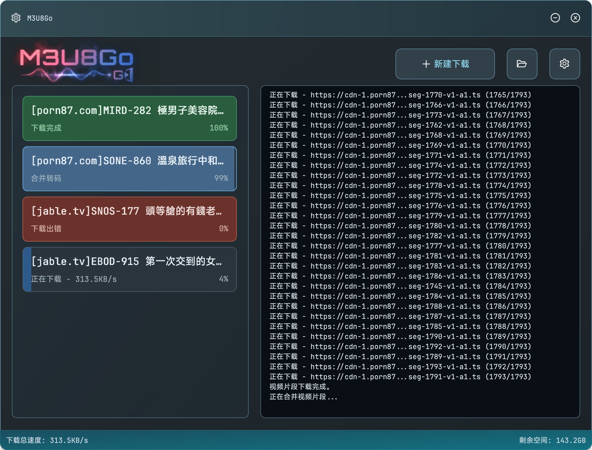

⚡️
分片并发下载Concurrent Segments
多线程并发抓取视频片段，自动重试失败分片。Multi-threaded segment fetch with automatic retry.
🔐
AES-128 解密AES-128 Decryption
自动解析播放列表加密信息，透明解密每个片段。Parses playlist key info and decrypts each segment transparently.
🎬
自动合并 MP4Auto Merge to MP4
内置 FFmpeg 自动下载与管理，下载完成即合并输出。Auto-downloads and manages FFmpeg; merges to MP4 on completion.
📋
多任务队列Multi-task Queue
同时管理多个下载任务，可自定义并发数与重试次数。Manage multiple tasks simultaneously with configurable concurrency.
🔗
自定义协议唤起Custom Protocol
支持 m3u8go:// 协议，浏览器扩展一键发送下载任务。Supports m3u8go:// protocol for one-click dispatch from browser.
🌐
中英双语界面Bilingual UI
内置中文与英文切换，适合不同用户习惯。Switch between Chinese and English in settings.